ActD Filtrer ces notes
UMLActivity
Untitled
::
Note
::
Activity Diagram
::
ActD Filtrer ces notes
Description
none
Diagrams

ActD Filtrer ces notes
Groups
Utilisateur
Interface
BDD
Nodes
InitialNode1
Vouloir filtrer ces notes
Requête de selection de la liste des filtres
Executer la requête
Vérifier le retour BDD
DecisionNode1
Selectionner un filtre
Requête de sélection des notes concerner par le filtre
Exécuter la requête
Vérifier le retour BDD
DecisionNode2
Afficher la liste des notes filtrer
ActivityFinalNode1
Edges
(InitialNode1→Vouloir filtrer ces notes)
(Vouloir filtrer ces notes→Requête de selection de la liste des filtres)
(Requête de selection de la liste des filtres→Executer la requête)
(Executer la requête→Vérifier le retour BDD)
(Vérifier le retour BDD→DecisionNode1)
Try (DecisionNode1→Afficher la liste des filtres)
(Afficher la liste des filtres→Selectionner un filtre)
(Selectionner un filtre→Requête de sélection des notes concerner par le filtre)
(Requête de sélection des notes concerner par le filtre→Exécuter la requête)
(Exécuter la requête→Vérifier le retour BDD)
(Vérifier le retour BDD→DecisionNode2)
Try (DecisionNode2→Afficher la liste des notes filtrer)
(Afficher la liste des notes filtrer→ActivityFinalNode1)
CATCH (Vérifier le retour BDD→Erreur SQL)
Catch (DecisionNode2→Erreur SQL)
(DecisionNode1→Erreur SQL)
Properties
Name
Value
name
ActD Filtrer ces notes
stereotype
null
visibility
public
isReentrant
true
isReadOnly
false
isSingleExecution
false
Owned Elements
ActD Filtrer ces notes